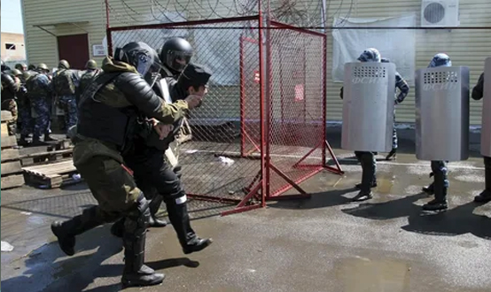

Общая характеристика преступлений против государственной власти, интересов государственной службы и службы в органах местного самоуправления (должностных преступлений)
Преступления против государственной власти, интересов государственной службы и службы в органах местного самоуправления предусмотрены статьями 285–293 УК РФ (глава 30). Эти преступления традиционно называют должностными ввиду того, что совершаются особым субъектом – должностным лицом.
Видовым объектом рассматриваемых преступлений является совокупность общественных отношений, складывающихся в процессе нормальной, законной деятельности органов власти и управления. Непосредственным объектом (основным) выступает нормальная деятельность отдельных звеньев в системе власти и управления. В качестве дополнительного непосредственного объекта закон называет интересы личности, ее здоровье, в таких, например, преступлениях, как злоупотребление должностными полномочиями (ст. 285 УК), превышение должностных полномочий (ст.286 УК), присвоение полномочий должностного лица (ст. 288 УК).
Отдельные составы преступления предполагают обязательный признак — предмет. Так, при получении взятки (ст. 290 УК), даче взятки (ст. 291 УК) предметом являются различные материальные блага, объединенные термином — взятка, при служебном подлоге (ст. 292 УК) — официальные документы, представляющие соответствующие права или освобождающие от обязанностей, т.е. порождающие определенные юридические последствия.
Субъективную сторону подавляющего большинства преступлений характеризует умышленная форма вины. Исключение составляет халатность, являющаяся неосторожным преступлением. Мотив назван законом в качестве обязательного признака субъективной стороны злоупотребления должностными полномочиями — корыстная или иная личная заинтересованность; аналогичный мотив и при служебном подлоге.
Субъект этих преступлений — должностное лицо (кроме составов, сформулированных в ст. 288 и 291 УК). К должностным лицам относят представителей власти (депутаты, работники прокуратуры, суда, оперативно-следственные работники и др.); лиц, выполняющих организационно-распорядительные функции (руководители государственных предприятий, учреждений, их структурных подразделений); лиц, выполняющих административно-хозяйственные функции (начальники финансовых отделов, снабженческих, планово-хозяйственных служб, заведующие складами, главные и старшие бухгалтеры и т.д.); лиц, занимающих государственные должности, установленные Конституцией РФ или конституционными законами (Президент РФ, Председатель Правительства РФ, Председатель Государственной Думы, Председатель Совета Федерации и др.), государственные должности субъектов РФ.
Виды должностных преступлений
По непосредственному объекту должностные преступления можно разделить на две группы:
1) коррупционные:
- ст. 290 – получение взятки (лично или через посредника взятки в виде денег, ценных бумаг, иного имущества либо в виде незаконных оказания ему услуг имущественного характера, предоставления иных имущественных прав, если указанные действия (бездействие) входят в служебные полномочия должностного лица либо если оно в силу должностного положения может способствовать указанным действиям (бездействию), а равно за общее покровительство или попустительство по службе);
- ст. 291 – дача взятки (лично или через посредника, в том числе когда взятка по указанию должностного лица передается иному физическому или юридическому лицу);
- ст. 291.1. – посредничество во взяточничестве (непосредственная передача взятки по поручению взяткодателя или взяткополучателя либо иное способствование взяткодателю и (или) взяткополучателю в достижении либо реализации соглашения между ними о получении и даче взятки в значительном размере);
- ст. 291.2. – мелкое взяточничество (в размере, не превышающем десяти тысяч рублей);
2) некорррупционные:
- ст. 285 – злоупотребление должностными полномочиями (использование должностным лицом своих служебных полномочий вопреки интересам службы, если это деяние совершено из корыстной или иной личной заинтересованности и повлекло существенное нарушение прав и законных интересов граждан или организаций либо охраняемых законом интересов общества или государства);
- ст. 285.1. – нецелевое расходование бюджетных средств (на цели, не соответствующие условиям их получения, совершенное в крупном размере, – более 1,5 млн рублей);
- ст. 285.2. – нецелевое расходование средств государственных внебюджетных фондов;
- ст. 285.3. – внесение в единые государственные реестры заведомо недостоверных сведений;
- ст. 285.4. – злоупотребление должностными полномочиями при выполнении государственного оборонного заказа;
- ст. 285.5. – нарушение должностным лицом условий государственного контракта по государственному оборонному заказу либо условий договора, заключенного в целях выполнения государственного оборонного заказа;
- ст. 285.6. – отказ или уклонение должностного лица, подвергнутого административному наказанию, от заключения государственного контракта по государственному оборонному заказу либо договора, необходимого для выполнения государственного оборонного заказа;
- ст. 286 – превышение должностных полномочий (совершение должностным лицом действий, явно выходящих за пределы его полномочий и повлекших существенное нарушение прав и законных интересов граждан или организаций);
- ст. 286.1. – неисполнение сотрудником органа внутренних дел приказа;
- ст. 287 – отказ в предоставлении информации Федеральному Собранию Российской Федерации или Счетной палате Российской Федерации;
- ст. 288 – присвоение полномочий должностного лица;
- ст. 289 – незаконное участие в предпринимательской деятельности (учреждение должностным лицом организации, осуществляющей предпринимательскую деятельность, либо участие в управлении такой организацией лично или через доверенное лицо вопреки запрету, установленному законом, если эти деяния связаны с предоставлением такой организации льгот и преимуществ или с покровительством в иной форме);
- ст. 292 – служебный подлог (внесение должностным лицом, а также государственным служащим или муниципальным служащим, не являющимся должностным лицом, в официальные документы заведомо ложных сведений, исправлений, искажающих их действительное содержание, если эти деяния совершены из корыстной или иной личной заинтересованности);
- ст. 292.1. – незаконная выдача паспорта гражданина Российской Федерации, а равно внесение заведомо ложных сведений в документы, повлекшее незаконное приобретение гражданства Российской Федерации;
- ст. 293 – халатность (неисполнение или ненадлежащее исполнение должностным лицом своих обязанностей вследствие недобросовестного или небрежного отношения к службе либо обязанностей по должности, если это повлекло причинение крупного ущерба или существенное нарушение прав и законных интересов граждан или организаций либо охраняемых законом интересов общества или государства).